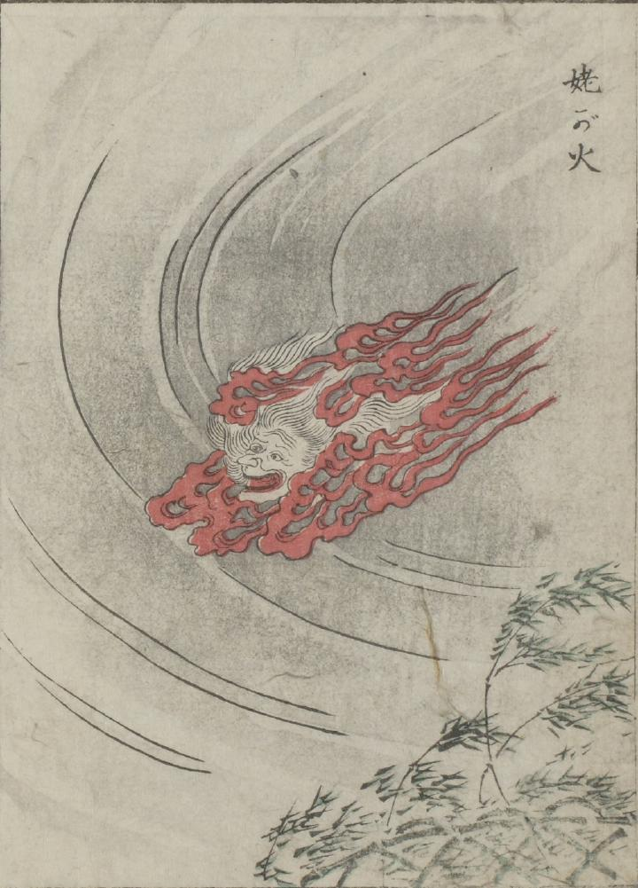

← 图鉴索引
怪火；カイカ

老婆の頭部が炎をまとい、空を飛んでいる。
出典：親書誌：U426_nichibunken_0051：怪物画本；カイブツエホン／日付：2006／資源識別子：U426_nichibunken_0051_0014_0000
Copyright (c)2010- International Research Center for Japanese Studies, Kyoto, Japan. All rights reserved.